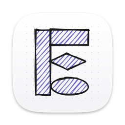

Tabs and a real menu bar
Native menus and shortcuts, tabs, and double-click any .excalidraw in Finder to open it.

ExcalideskExcalidraw for macOS · free & open source
A fast, local-first desktop app for Excalidraw. Every drawing is a plain .excalidraw file in a folder you pick, synced by iCloud Drive and drawn at 120Hz. Claude Code and Codex can sketch on it with you.

.excalidraw file that opens anywhere.Mac apps that embed a web view get 60 fps, even on a 120Hz screen. Excalidesk lifts that cap, so panning and freehand strokes keep up with your hand at 120 fps, the same as Chrome.
Frame rate panning at 100% zoom, M1 Pro with ProMotion
Your screen, right now: …
Claude Code, Codex and other MCP clients open drawings in Excalidesk and sketch prototypes, flows and architectures, one option per frame. You edit right on the canvas or pin comments, then send it back. They revise and reply.
Wireframes, flowcharts, Mermaid diagrams, all as editable shapes. It renders a PNG to check its own work.
Move, delete or retype anything. Or select a shape and press C to pin a note to it.
The agent gets your open notes and what they point at, every change you made, and an annotated PNG.
Each note is marked done with a one-line reply. Go around again until it's right.
claude mcp add excalidesk -s user -- /Applications/Excalidesk.app/Contents/MacOS/excalidesk --mcpcodex mcp add excalidesk -- /Applications/Excalidesk.app/Contents/MacOS/excalidesk --mcpNo library, no import, no lock-in. A workspace is a folder, and each drawing is a standard .excalidraw file that excalidraw.com, the Obsidian plugin and git read as is.
Native menus and shortcuts, tabs, and double-click any .excalidraw in Finder to open it.
Right-click menus, double-click to rename, drag workspaces into order, sort by modified, created or name.
The canvas and the window follow the same theme, in English or 中文.
Comments are left out of exports automatically. In excalidraw.com they show up as plain sticky notes.
Checks GitHub Releases, verifies each update against a key built into the app, and installs it when you restart.
The official package, not a fork, fully offline with its fonts bundled. Same editor, same files.
Free and open source under the MIT license. Needs macOS 13 Ventura or later.
First launch: Excalidesk isn't notarized by Apple yet, so macOS blocks it the first time. Open System Settings → Privacy & Security and click Open Anyway. From then on it updates itself.